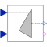
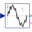

PythagorasDetermines the hypotenuse or leg of a right triangle |

|
Information
This information is part of the Modelica Standard Library maintained by the Modelica Association.
This block determines the hypotenuse y = sqrt(u1^2 + u2^2)
if the boolean parameter u1IsHyotenuse = false.
In this case the two inputs u1 and
u2 are interpreted as the legs of a right triangle
and the boolean output valid is always equal to
true.
If u1IsHyotenuse = true, input u1 is interpreted as hypotenuse and u2
is one of the two legs of a right triangle.
Then, the other of the two legs of the right triangle is the output, determined by
y = sqrt(u1^2 - u2^2), if u1^2 - u2^2 ≥ 0; in this case the
boolean output valid is equal to true. In case of u1^2 - u2^2 < 0, the
output y = 0 and valid is set to false.
Parameters (1)
| u1IsHypotenuse |
Value: false Type: Boolean Description: If true, u1 is the hypotenuse and y is one leg |
|---|
Connectors (4)
| u1 |
Type: RealInput Description: Connector of Real input signal 1 |
|
|---|---|---|
| u2 |
Type: RealInput Description: Connector of Real input signal 2 |
|
| y |
Type: RealOutput Description: Connector of Real output signal |
|
| valid |
Type: BooleanOutput Description: Is true, if y is a valid result |
Used in Components (1)
|  |
Modelica.Blocks.Math
Output the total harmonic distortion (THD) |